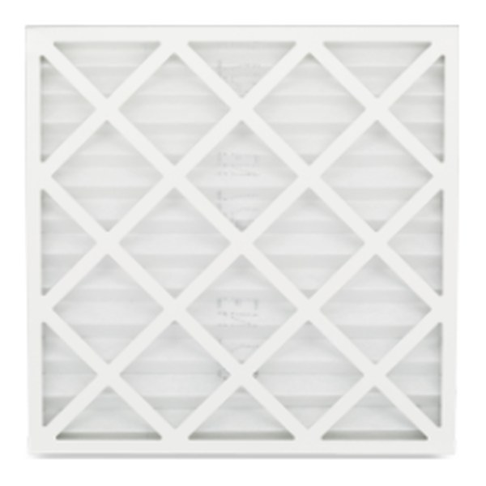
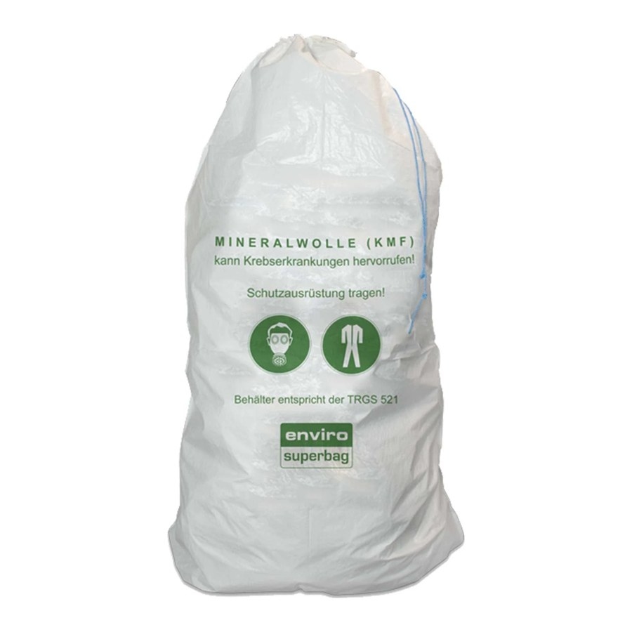
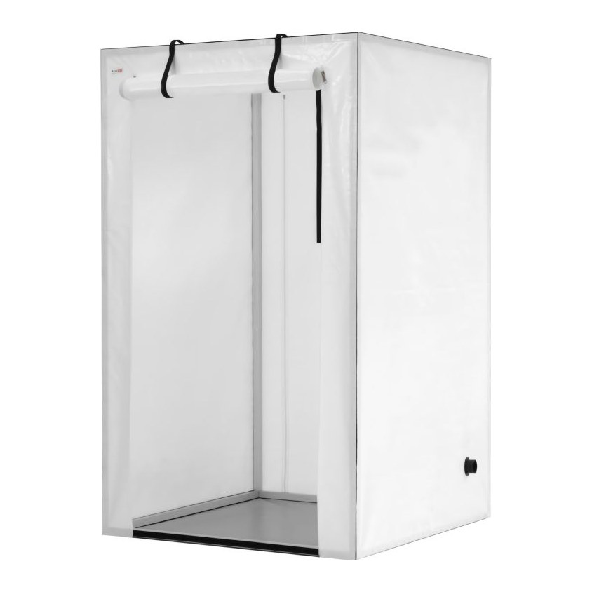
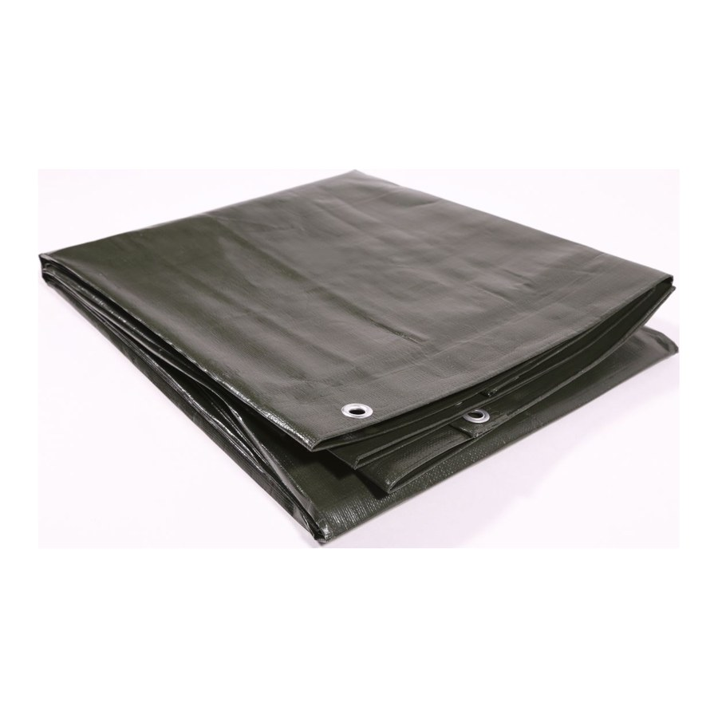
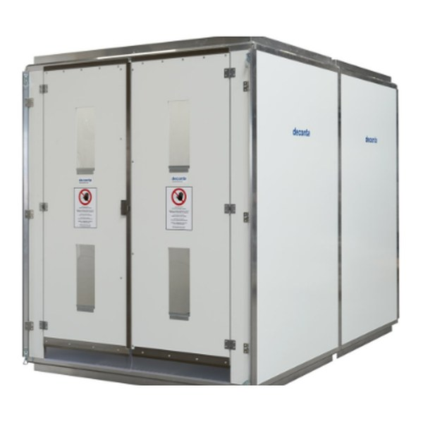
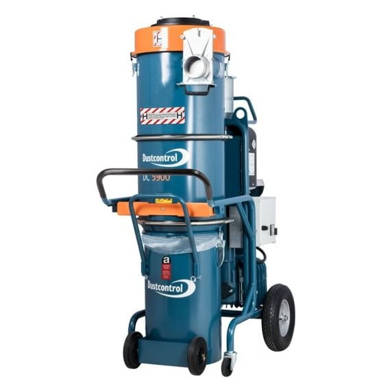
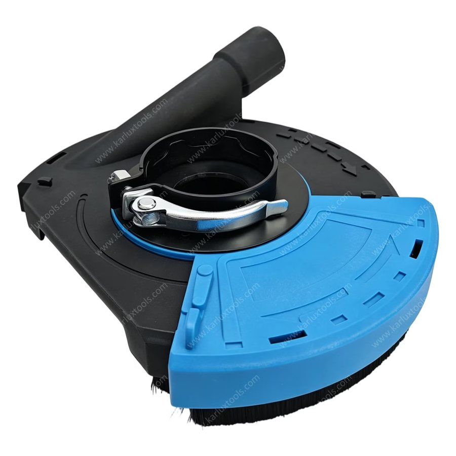
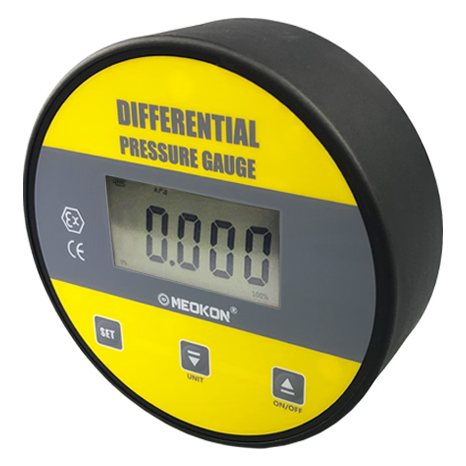
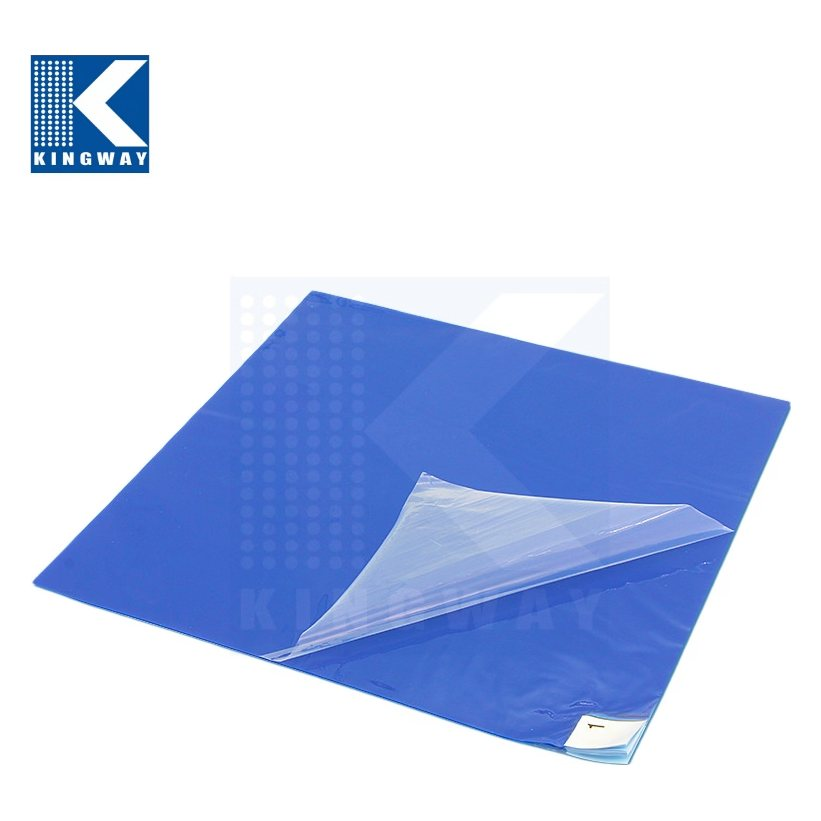

Illustration similar – shows the product type.
HEPA filter set for negative air machines (HEPA H13/H14 + pre-filters)
HEPA filter H13/H14 in an aluminium frame with matching pre-filter set as replacement for negative air machines in the black area.
The HEPA filter set is the wear part of the negative air machine: the H13 or H14 HEPA filter per EN 1822 separates asbestos and fine dust fibres from the extracted room air before the air is returned to the work area or released outdoors. The aluminium-frame product, format 610 x 610 x 292 mm, uses a glass fibre medium with aluminium or paper separators, polyurethane sealant and an expanded-metal guard; upstream G4 pre-filters extend its service life. After use in the black area, filters and pre-filters count as contaminated and must be disposed of under TRGS 519.
Technical data
| Filter class | H13 or H14 per EN 1822 |
|---|---|
| Format | 610 x 610 x 292 mm (deep-pleat standard); special sizes on request |
| Frame | Aluminium frame |
| Filter medium | Glass fibre paper; separators of aluminium foil or paper |
| Sealant | Polyurethane (PU) |
| Face guard | Expanded sheet metal |
| Operating temperature | below 80 °C |
| Pre-filter example | 595 x 595 x 19 mm, 20 pcs per box |
| Customs tariff number (HS) | 84219990 |
EU standards and regulations
EN 1822-1High efficiency air filters (EPA, HEPA, ULPA): classification, performance testing, marking (H13/H14)EN 1822-4ISO 29463-1High-efficiency filters and filter media for removing particles in air: classificationTRGS 519Asbestos: negative pressure in the black area and disposal of contaminated filtersREACH (EG) 1907/2006Substances of very high concern in articles (sealant, frame, medium)
Goes well with



More products in this category















